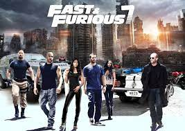
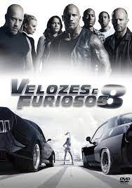

| filmes | sinopse | lançado | |
|---|---|---|---|
| velozes e furiosos 7 | Um agente do governo oferece ajuda para cuidar de Shaw em troca de Dom e o grupo resgatar um "hacker" sequestrado. Dessa vez, não se trata apenas de velocidade: a corrida é pela sobrevivência. | 2 de abril de 2015 |  |
| velozes e furiosos 8 | Depois da aposentadoria de Brian e Mia, Dom e Letty aproveitam a lua de mel e levam uma vida pacata e normal. Mas a adrenalina do passado volta com tudo quando uma mulher misteriosa obriga Dom a retornar ao mundo do crime e da velocidade | 13 de abril de 2017 |  |
| velozes e furiosos 9 | Dominic Toretto e Letty vivem uma vida pacata ao lado do filho. Mas eles logo são ameaçados pelo passado de Dom: seu irmão desaparecido Jakob, que retorna e está trabalhando ao lado de Cipher. Cabe a Dom reunir a equipe novamente para enfrentá-los. | 24 de junho de 2021 | |